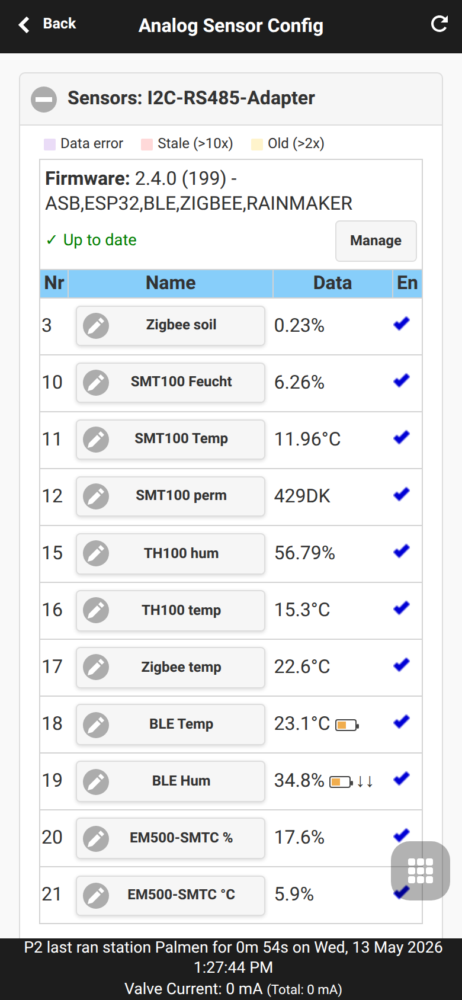
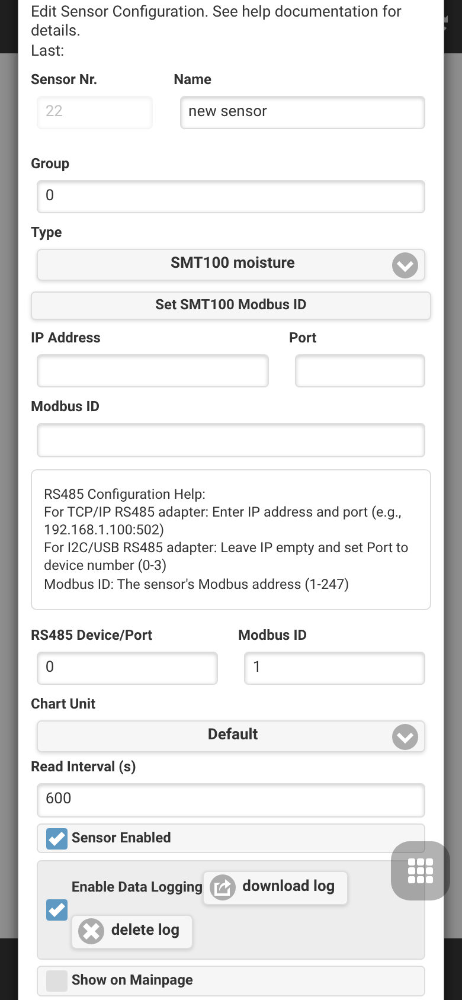

Configuração de Sensor Analógico
A Configuração de Sensor Analógico é a área da interface do OpenSprinklerPro para definir fontes de sensores e usar seus valores na automação da irrigação. Abra a partir do menu inferior em Analog Sensor Configuration.

Páginas relacionadas: Automação e Monitores de Sensores, Sensores FYTA, Extensões OpenSprinklerPro, Adendo de API e plataforma.
Definições de sensores
A primeira seção define a lista de sensores. Cada linha possui um número de sensor, nome, valor atual e estado de ativação. Add Sensor abre o editor para um novo sensor; os sensores existentes são editados tocando no nome do sensor.

Campos do Editor
| Campo | Significado |
|---|---|
| Número, nome e grupo | Identificam o sensor em listas, gráficos, ajustes de programa e monitores. Os grupos são rótulos para classificar e filtrar sensores relacionados. |
| Tipo | Seleciona o driver ou fonte virtual. O tipo determina quais campos adicionais aparecem. |
| Unidade e formato | Define como os valores são exibidos, registrados e comparados. Escolha uma unidade compatível com o valor físico ou a carga de dados. |
| Intervalo, log e exibição | O intervalo controla a frequência com que o valor é atualizado. O Log ativa o armazenamento de histórico/gráfico; show controla a visibilidade no painel da interface de usuário. |
| Barramento, endereço e canal | Usado por fontes analógicas RS485/Modbus, ASB e OSPi para selecionar o barramento de hardware, endereço do dispositivo ou canal analógico. |
| Calibração definida pelo usuário | Para sensores analógicos definidos pelo usuário, insira a fórmula de conversão de tensão bruta/ADC para o valor físico final. |
| Tópico MQTT e filtro | Os sensores MQTT assinam um tópico e, opcionalmente, extraem um valor de um JSON ou carga de texto. |
| Lista de sensores de origem | Os sensores de grupo calculam um novo valor a partir dos sensores de origem selecionados. Todas as origens devem usar unidades compatíveis. |
RS485 / Modbus
Use estes tipos para sensores com fio em um barramento RS485 ou um dispositivo Modbus RTU genérico. Configure o barramento, endereço escravo, registro/canal e intervalo de leitura de acordo com o dispositivo conectado.
| Tipo de sensor | Explicação |
|---|---|
| Truebner SMT100 RS485 Modbus, modo umidade | Lê o valor da umidade do solo de um Truebner SMT100 via RS485/Modbus. Use para decisões de irrigação baseadas no teor volumétrico de água. |
| Truebner SMT100 RS485 Modbus, modo temperatura | Lê o canal de temperatura do SMT100. Use quando a temperatura do solo deve ser registrada ou usada em regras de monitoramento. |
| Truebner SMT100 RS485 Modbus, modo permissividade | Lê o canal de permissividade dielétrica do SMT100 para diagnósticos ou modelos de solo avançados. |
| Truebner TH100 RS485 Modbus, modo umidade | Lê a umidade relativa de um Truebner TH100. Útil para monitoramento em estufas ou umidade ambiente. |
| Truebner TH100 RS485 Modbus, modo temperatura | Lê o valor de temperatura do TH100 para monitoramento da temperatura ambiente ou da área de instalação. |
| Sensor genérico RS485/MODBUS RTU | Lê um valor Modbus RTU configurável de equipamentos de terceiros. Defina o endereço, registro, formato de dados e calibração para corresponder ao manual do dispositivo. |
Analog Sensor Board (ASB)
Os tipos ASB lêem entradas de tensão da placa de sensor analógio do OpenSprinkler e as convertem em um valor físico. Selecione o canal correto e use apenas modos de sensor compatíveis com a fiação e a tensão de alimentação.
| Tipo de sensor | Explicação |
|---|---|
| ASB - modo tensão 0..5V | Relata a tensão de entrada medida na ASB diretamente na faixa de 0 a 5 V. Use para calibração ou sensores externos com sua própria conversão. |
| ASB - 0..3.3V para 0..100% | Converte uma tensão de entrada de 0 a 3,3 V em uma porcentagem. Útil para sinais analógicos genéricos de nível ou umidade. |
| ASB - SMT50 modo umidade | Converte a saída analógica de um Truebner SMT50 em umidade do solo. |
| ASB - SMT50 modo temperatura | Converte a saída de temperatura do SMT50 em um valor de temperatura física. |
| ASB - SMT100-analog modo umidade | Converte a saída analógica de umidade de um Truebner SMT100. |
| ASB - SMT100-analog modo temperatura | Converte a saída analógica de temperatura de um Truebner SMT100. |
| ASB - Vegetronix VH400 | Converte a saída do Vegetronix VH400 em umidade do solo. |
| ASB - Vegetronix THERM200 | Converte a saída do Vegetronix THERM200 em temperatura. |
| ASB - Vegetronix AquaPlumb | Converte a saída do Vegetronix AquaPlumb para presença de água ou medições estilo nível. |
| ASB - sensor definido pelo usuário | Usa calibração personalizada para sensores não cobertos por uma conversão embutida. Defina a unidade, o formato de exibição e a conversão cuidadosamente. |
Entradas analógicas OSPi
Estes tipos são para entradas analógicas disponíveis em instalações baseadas em OSPi/Raspberry Pi. Eles não são usados em controladores apenas ESP sem o hardware de entrada analógica correspondente.
| Tipo de sensor | Explicação |
|---|---|
| Entrada analógica OSPi - modo tensão 0..3.3V | Relata a tensão de entrada analógica medida diretamente na faixa de 0 a 3,3 V. |
| Entrada analógica OSPi - 0..3.3V para 0..100% | Converte uma entrada de 0 a 3,3 V em uma porcentagem para sensores analógicos genéricos. |
| Entrada analógica OSPi - SMT50 modo umidade | Converte uma saída de umidade SMT50 conectada a uma entrada analógica OSPi. |
| Entrada analógica OSPi - SMT50 modo temperatura | Converte uma saída de temperatura SMT50 conectada a uma entrada analógica OSPi. |
| Temperatura interna do Raspberry Pi | Lê a temperatura da CPU do Raspberry Pi. Use-o como um sensor de diagnóstico para gabinete OSPi ou verificações térmicas. |
| Temperatura interna do ESP32 | Lê o sensor de temperatura interna do ESP32 onde for suportado. Trate-o como diagnóstico do controlador, e não como temperatura ambiente calibrada. |
Fontes sem fio, na nuvem e remotas
Estes tipos recebem valores de integrações de rádio, serviços em nuvem, MQTT ou outro controlador OpenSprinkler. Confirme a disponibilidade da plataforma antes de selecioná-los: Zigbee e BLE requerem builds ESP32 compatíveis; FYTA requer credenciais de nuvem; MQTT requer uma configuração de corretor (broker).
| Tipo de sensor | Explicação |
|---|---|
| Sensor Zigbee | Mapeia um valor relatado por um dispositivo Zigbee emparelhado, como temperatura, umidade ou umidade do solo. Selecione o dispositivo e a medição exposta. |
| Sensor BLE | Lê um sensor Bluetooth Low Energy compatível. Use o intervalo de varredura e a seleção do dispositivo para equilibrar a atualização e a carga de rádio. |
| Sensor de umidade FYTA | Importa a umidade do solo de um sensor de planta FYTA após a configuração do FYTA. |
| Sensor de temperatura FYTA | Importa a temperatura de um sensor de planta FYTA após a configuração do FYTA. |
| Sensor de umidade Gardena | Importa a umidade do solo de um sensor inteligente Gardena via API de nuvem da Gardena. |
| Sensor de temperatura Gardena | Importa a temperatura de um sensor inteligente Gardena via API de nuvem da Gardena. |
| Assinatura MQTT | Subscreve a um tópico MQTT e analisa o valor recebido. Configure o tópico, expressão JSON/filtro opcional, unidade e comportamento de timeout. |
| Sensor OpenSprinkler remoto | Lê um sensor de outro controlador OpenSprinkler. Configure a URL/controlador remoto e o número do sensor de origem. |
Dados meteorológicos
Os sensores meteorológicos expõem valores já conhecidos pelo controlador a partir do serviço meteorológico configurado. Use o tipo específico da unidade que corresponda às suas regras de automação e gráficos.
| Tipo de sensor | Explicação |
|---|---|
| Dados climáticos - temperatura (°F) | Temperatura do serviço meteorológico em graus Fahrenheit. |
| Dados climáticos - temperatura (°C) | Temperatura do serviço meteorológico em graus Celsius. |
| Dados climáticos - umidade (%) | Umidade relativa do serviço meteorológico em porcentagem. |
| Dados climáticos - precip (inch) | Precipitação do serviço meteorológico em polegadas. |
| Dados climáticos - precip (mm) | Precipitação do serviço meteorológico em milímetros. |
| Dados climáticos - vento (mph) | Velocidade do vento do serviço meteorológico em milhas por hora. |
| Dados climáticos - vento (kmh) | Velocidade do vento do serviço meteorológico em quilômetros por hora. |
| Dados climáticos - ETO | Valor de evapotranspiração de referência usado para o contexto de irrigação. |
| Dados climáticos - radiação | Valor de radiação solar da fonte meteorológica, quando disponível. |
Grupo de sensores
Os sensores de grupo criam um valor agregado a partir de outros sensores. Escolha sensores de origem com unidades e intervalos de registro comparáveis para que o resultado seja significativo.
| Tipo de sensor | Explicação |
|---|---|
| Grupo de sensores com valor mínimo | Relata o valor atual mais baixo entre os sensores de origem selecionados. |
| Grupo de sensores com valor máximo | Relata o valor atual mais alto entre os sensores de origem selecionados. |
| Grupo de sensores com valor médio | Relata a média aritmética dos sensores de origem selecionados. |
| Grupo de sensores com valor de soma | Relata a soma de sensores de origem selecionados, por exemplo, totais combinados de chuva ou fluxo. |